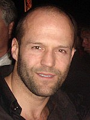
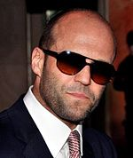
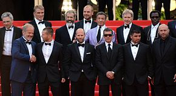

About
Джейсон Стетхем народився 26 липня 1967 року в Ширбруку, графство Дербішир в сім'ї танцівниці
Ейлін (уроджена Єйтс) і вуличного продавця Баррі Стетхема. Його батько також працював маляром,
шахтарем і співаком на Канарських островах. Стетхем переїхав до Грейт-Ярмута, штат Норфолк,
де він спочатку вирішив не продовжувати кар’єру свого батька, працюючи на місцевих ринкових лотках,
замість цього займаючись бойовими мистецтвами. Він виріс разом з футболістом Вінні Джонсом,
разом з яким пізніше буде виступати. Джонс познайомив його з футболом, і Стетхем продовжив грати
за місцеву гімназію (1978–1983), яку він відвідував з 11 років, пристрасть, яку він поділяв
із дайвінгом. Він щодня вдосконалював свою техніку пірнання і був членом Британської
національної команди з плавання протягом 12 років.Він змагався за Англію на Іграх Співдружності 1990
року в змаганнях з дистанцій 10, 3 та 1 метр. У 2003 році в інтерв’ю IGN він сказав, що час,
проведений у національній збірній, був «чудовим досвідом», який «навчить дисципліни, зосередженості
та, звичайно, вбереже від неприємностей».

Життя Стетхема в ЗМІ почалося, коли він був помічений агентством Sports Promotions,
що спеціалізується на спортивному моделюванні, коли він тренувався в лондонському Національному
спортивному центрі Crystal Palace. Він також був підписаний Tommy Hilfiger, Griffin і Levi's для
різних модельних контрактів під час їх весняно-літніх колекцій 1996 року. У 1997 році він став
моделлю для бренду одягу French Connection. Представник мережі вуличного одягу сказав:
«Ми вибрали Джейсона, тому що хотіли, щоб наша модель виглядала як звичайний хлопець.
Його зовнішність наразі підходить: дуже мужній і не надто чоловічий модельний». Однак він все ще
був змушений йти по стопах свого батька як вуличний продавець, щоб звести кінці з кінцями,
заявивши, що він продавав «фальшиві парфуми та ювелірні вироби на розі вулиць». Він невелико
знімався в кількох музичних відео, включаючи «Comin' On» групи The Shamen у 1993 році,
«Run to the Sun» групи Erasure у 1994 році та «Dream a Little Dream of Me» групи
The Beautiful South у 1993 році.
Працюючи моделлю для French Connection, він познайомився з молодим британським режисером
Гаєм Річі, який розробляв кінопроект і мав виконати роль вуличного шахрая. Дізнавшись
про минуле Стетхема як продавця на чорному ринку, Річі запропонував йому роль «Бекона» у своєму
кримінальному комедійному трилері 1998 року «Замок, запас і два димлячих ствола». Фільм був добре
прийнятий як критиками, так і глядачами, і допоміг привернути увагу громадськості до Стетхема.
За роль у фільмі йому заплатили 5000 фунтів стерлінгів. Друга співпраця Стетхема з Річі відбулася
у фільмі 2000 року «Уривок», де він виконав роль «Турка». Зібраний разом із популярними акторами
Бредом Піттом, Деннісом Фаріною та Бенісіо дель Торо, фільм зібрав понад 80 мільйонів доларів
касових зборів. За роль у фільмі «Уривок» він отримав у Великобританії 15 000 фунтів стерлінгів,
що втричі перевищує суму його першого фільму. Стетхем зміг пробитися в Голлівуд і знявся в двох
фільмах у 2001 році: науково-фантастичному бойовику жахів «Привиди Марса» і науково-фантастичному
бойовику про бойові мистецтва «Єдиний».
Стетхему пропонували більше ролей у кіно, і в 2002 році він отримав головну роль водія
Френка Мартіна в бойовику «Перевізник» за сценарієм Люка Бессона. Він вивчав Він Чун,
карате та кікбоксинг. Фільм породив два продовження, Транспортер 2 (2005) і Транспортер 3 (2008).
Він також грав ролі другого плану в Mean Machine (2002), The Italian Job (2003) і Cellular (2004),
де він грав головного лиходія.
У 2005 році Стетхем знову був обраний Річі на головну роль у своєму новому проекті «Револьвер»,
який був провальним у критиків і касових зборах. Він зіграв драматичну роль у незалежному
фільмі «Лондон» у 2006 році. Того ж року він зіграв головну роль у бойовику «Кренк». Стетхема
попросили прорекламувати Кренка під час конгресу Comic-Con у Сан-Дієго в 2006 році. У 2008 році
Стетхем знявся в британському кримінальному трилері «Банківська робота» і «Смертельні перегони»,
ремейку «Смертельні перегони 2000» (1975). Американський кінокритик Армонд Вайт привітав сходження
Стетхема як зірки бойовиків. Під час «Смертельних перегонів» Вайт назвав Стетхема «найкращим
послужним списком будь-якої сучасної кінозірки». Пізніше в 2008 році Вайт похвалив
«Транспортера 3» Стетхема як чудовий приклад кінетичного поп-арту. Кріс Г’юїтт з журналу
Empire Magazine відзначив, що фільм «суворий, сірий роман», але приписав фільму те, що він
«перетворив Стетхема як нового героя бойовика, який так само легко почувається з грубими
однострочниками, як він був із високим героєм у стилі Джекі Чана. ногами».

У 2009 році Стетхем почав роботу над новим фільмом за сценарієм Девіда Піплза та Джанет Піплз.
Стетхем заявив: «У нас є фільм, який ми намагаємося зробити, написаний Девідом Піплзом і Джанет
Піплз, у дусі старого фільму «Скарби Сьєрра-Мадре». Це не рімейк чи щось подібне, але це трохи
трохи схоже на те, про стосунки та про те, як жадібність руйнує стосунки цих трьох людей. Робоча
назва — The Grabbers». Він повторив свою роль Чева Челіоса в продовженні
«Кранк: Висока напруга» 2009 року.
У 2010 році Стетхем знявся разом із іншими зірками бойовика Сильвестром Сталлоне, Джетом Лі,
Дольфом Лундгреном і Міккі Рурком, серед інших, у груповому бойовику «Нестримні». Стетхем грає
Лі Крістмаса, колишнього солдата SAS і експерта з ближнього бою з використанням ножів. Фільм був
комерційно успішним, зайнявши перше місце в прокаті в США, Великій Британії, Китаї та Індії, і
зібрав у світовому прокаті 274 мільйони доларів.
У своєму першому фільмі 2011 року Стетхем знявся в рімейку фільму Чарльза Бронсона 1972 року
«Механік» у ролі Артура Бішопа. Театральний трейлер, який зображує персонажа Стетхема, який
«відстрілює людині голову», був заборонений до розповсюдження Управлінням стандартів реклами
за демонстрацію надмірного насильства. Його роль у «Механіку» була схвально оцінена
критиками як у Сполучених Штатах, так і у Великій Британії. «Гардіан» похвалив його гру як
«ефективність, яка тепер уже звичайна» у створенні «розважального трилера про вбивцю».
The New York Times відзначила, що Стетхем був «витонченим, як куля»; і фільм «більш потужна
перезарядка» оригіналу. Британська газета The Daily Telegraph назвала Стетхема «найкращим
експортером бойовиків Англії майже назавжди, діловим скотином із джентльменською душею».
Він повернувся до британського кіно, знявшись у поліцейській драмі «Бліц» у ролі сержанта детектива
Тома Бранта. Фільм отримав змішані відгуки: Кет Клейк з The Guardian назвала його «непоганим» і
«дивно цікавим». Тоді він отримав роль у бойовику «Еліта вбивць». Фільм заснований на реальних
подіях, які були сюжетом роману сера Ренальфа Файнса «Люди-пір'я». Стетхем зіграв вбивцю на ім'я
Денні, який вийшов на пенсію, щоб врятувати старого друга, якого зіграв Роберт Де Ніро.
Фільм зібрав негативний бюджет і був розкритикований критиками.
У серпні 2011 року він почав знімати «Паркер» для режисера Тейлора Гекфорда;
фільм вийшов на екрани в січні 2013 року. Стетхем зіграв Паркера, злочинного антигероя,
якого раніше зіграв Мел Гібсон у «Розплаті» 1999 року та Лі Марвін у фільмі «Повторна точка»
1967 року (хоча їхні персонажі мали різні прізвища). А. О. Скотт з The New York Times сказав
про актора у фільмі: «[Стетхем], який, здається, повністю складається з м’язів і рубцевої тканини,
відчуває себе комфортно зі своїми обмеженнями як актора. Його Паркер, у будь-якому випадку,
більше аксіоми, ніж повноцінна людська істота». У звіті BBC News за 2012 рік було оцінено,
що його десятирічна кінокар’єра на сьогоднішній день (з 2002 по 2012 рік) принесла в прокаті
понад один мільярд доларів, що зробило його одним із найпопулярніших кіноіндустрії.
Найпривабливіші зірки. Він був підписаний на повторну роль Лі Крістмаса у «Нестримних 2»
у 2012 році.

У 2013 році Стетхем знявся в епізодичній ролі в кінці «Форсажу 6» в ролі брата антагоніста
фільму Оуена Шоу (Люк Еванс). Він повторив персонажа, цього разу як головного антагоніста,
у Furious 7, який вийшов у квітні 2015 року. Він також зіграв головну роль разом
із Джеймсом Франко в трилері Homefront за сценарієм Сильвестра Сталлоне та став хедлайнером
британського трилера «Колібрі». Останній фільм критики відзначили за те, що він підняв акторські
здібності Стетхема на нові висоти. Його «спроба розвинути свій «бренд», пробуючи більш авантюрні
ролі», як зазначив Марк Кермоуд з The Guardian, «[розширила] його драматичну палітру». Стетхем
знявся в ролі одного з автогонщиків у музичному кліпі Summer of Calvin Harris 2014 року. У 2014
році він повернувся в ролі Лі Крістмаса у фільмі «Нестримні 3». Незважаючи на критику, фільм
зібрав 215 мільйонів доларів проти бюджету в 90 мільйонів доларів.
У 2015 році він знявся в комедії «Шпигун» разом з Меліссою Маккарті, Джудом Лоу і Роуз Бірн. Фільм,
який мав комерційний успіх, отримав особливу оцінку за демонстрацію комедійної сторони Стетхема
на відміну від його більш серйозних ролей. Згідно зі статтею в журналі Empire,
наприкінці 2015 року розроблявся Spy 2, де більше екранного часу було присвячено персонажу
Стетхема, Ріку Форду. Він був номінований на премію «Вибір критиків» за найкращу чоловічу
роль у комедії за роль у фільмі «Шпигун».
Наприкінці 2015 року Стетхему запропонували контракт на три фільми для перезапуску серіалу
«Транспортер», але він відмовився, оскільки йому не дали сценарій до дати підписання, і він
був незадоволений його компенсаційним пакетом. Згідно зі статтею The Guardian,
Стетхем висловив бажання зіграти Джеймса Бонда в майбутньому фільмі «Спектр». Її автор Стів
Роуз зазначив, що «безсумнівно, Стетхем може йти поряд із Бондом. І говорити про нього навряд
чи може бути проблемою для персонажа, чий акцент коливався між шотландським брогом Шона Коннері
та валлійським Тімоті Далтона». Після під час інтерв'ю критики та глядачі закликали включити
його в роль Джеймса Бонда в майбутньому фільмі.
Продовження його фільму 2011 року «Механік» було заплановано на кінець 2016 року та анонсовано
як «Механік: Воскресіння». Згодом фільм став комерційно успішним на міжнародних кіноринках,
зібравши 109,4 мільйона доларів у всьому світі. За даними Forbes, цей фільм став «сьомим
за обсягом доходів» для Стетхема та найуспішнішим з комерційної точки зору сольним фільмом у
його кар’єрі.
У лютому 2017 року він знявся разом з Гал Гадот у 30-секундній рекламі Super Bowl для Wix.com
під час Super Bowl LI. CNET повідомляє, що реклама досягла 22 мільйонів показів користувачів.
У 2016 році Стетхема знову попросили знову приєднатися до франшизи «Форсаж». Наступний
фільм «Доля лютих» був випущений у квітні 2017 року і мав комерційний успіх. Хоча фільм загалом
отримав неоднозначні відгуки, Стетхема похвалили за його комедійний момент і екранну хімію з
сучасниками. Згодом фільм став третім найкасовішим фільмом 2017 року та 12-м
найкасовішим фільмом усіх часів.
Шпигун 2 був підтверджений 15 лютого 2018 року. Але пізніше в 2018 році Файг пояснив, що,
хоча продовження «Шпигуна» все ще може вийти, «студія не зацікавилася» проектом.
Стетхем зіграв головну роль, колишнього капітана ВМС Джонаса Тейлора, у фільмі жахів «Мег»
2018 року, який вийшов на екрани 10 серпня. Щоб підготуватися до сцен, у яких він плаває у
водах, де кишать акули, Стетхем плавав із бичачими акулами на Фіджі. Згодом фільм зібрав у
світовому прокаті 527,8 мільйонів доларів, ставши найкасовішим американо-китайським спільним
виробництвом усіх часів.
У 2019 році Стетхем знову зіграв роль Декарда Шоу у фільмі «Форсаж: Хоббс і Шоу», який є
доповненням до франшизи «Форсаж», у якому зосереджено увагу на його персонажах і персонажах
Двейна Джонсона. Фільм зібрав у світовому прокаті 758 мільйонів доларів, ставши десятою
найкасовішою стрічкою 2019 року, і отримав загалом позитивні відгуки від критиків із похвалою за
гру Стетхема.